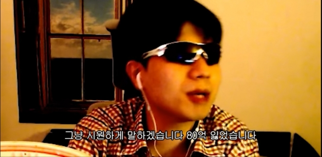

HTML
hello world
아이고 이게 머선129
대한민국의 前 리그 오브 레전드 프로게이머, 現 인터넷 방송인.
시즌 2 중반에 롤을 시작한 이후 롤갤에서 활동한 유명 랭커이자 대리기사로서 논란의 대상이 되었던 인물이다. 시즌 3~2020 시즌까지 모든 시즌에서 챌린저 1위에 도달했던 전무후무한 기록을 가지고 있는 솔랭전사이며, 현재까지도 매우 뛰어난 실력과 방송인으로서의 활동으로 유명하지만 대리게임과 인성 문제로 물의를 빚은 바 있다. 롤판의 문제아로서 도수, 도인비와 함께 도씨 가문의 일원으로 여겨진다.[22]
대리를 시작한 이유는 대학교 학비와 용돈을 벌기 위해서라고 한다. 롤 인벤에 대리게임에 대한 사과문을 올렸었고, 건전하게 게임을 하기로 약속했었다.[23] 그러나 라이엇게임즈로부터 본계정은 영구정지급인 천 년 정지를 받았고, 부계정 역시 계속 정지 당하는 중이다. 라이엇게임즈 측에서 "리그 오브 레전드 서비스 제공 거부"라는 초강수를 둔 것도 있지만, 당연히 부계정이 본인의 계정이 아니기 때문.
2015년 12월 기준 리그 오브 레전드 한국 서버와 중국 서버 모두에서 랭킹 1위를 달성한 전설적 기록을 가지고 있다. 중국 계정 자체가 정상적인 경로로는 확보가 어려운 면도 있지만 그걸 감안해도 전례가 없는 일이었다.[24] 라이엇게임즈로부터 대리게임 부정행위로 영구적인 정지를 받은 뒤로는 중국으로 건너가 사업을 시작했으며[25], 지금까지 리그 오브 레전드 인터넷 방송인으로 활동하고 있다.
